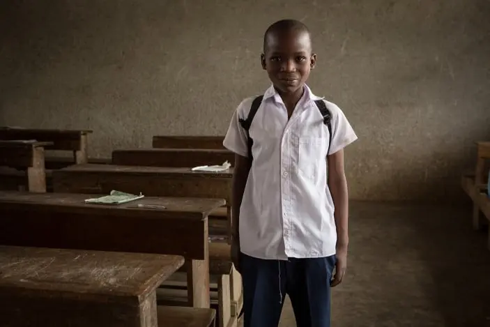

In Mwanza's low-income communities, daycare and kindergarten facilities are bustling environments where many families rely on for childcare while they are at work. By volunteering, individuals can lighten the workload of local staff and enhance the care provided to preschoolers.
As a volunteer in childcare, you'll support underfunded and under-resourced schools and kindergartens. Your role includes:
• Assisting in teaching
• Caring for children
• Organizing games and activities
• Assisting with feeding and mealtimes
• Engaging with children, and
• Performing other duties as needed
As a volunteer, you're allowed to bring educational materials like books and pencils, basic first aid supplies, and musical instruments to support activities and entertain the children. These items can usually be purchased locally in Tanzania, contributing to the local economy.
*And if you are interested, you can also start a personal fundraising campaign for the project you are working at!

Considerations
More than half of all children and teens do not meet minimum proficiency standards in reading and mathematics. Quality education provides an opportunity to learn and grow in a safe environment and is key to preventing poverty, securing long-term employment and improving quality of life.
By volunteering with children in Tanzania, you'll not only make a positive impact on their education, but you'll also benefit personally and professionally by:
• Independent teaching and/or assisting the head teachers
• Contributing to childhood education in underprivileged areas
• Providing children with a safe environment to learn life skills
• Gaining hands-on experience in childcare
• Become part of FIGY Travel's volunteer family and be part of something bigger.
• Personal development and growing
• Being immersed in the Tanzanian culture
• Exploring Africa's breathtaking wildlife
Our Impact
By recycling thousands of tons of materials annually, we significantly decrease the volume of
waste sent to landfills. Recycling materials requires less energy compared to producing new
ones, helping to reduce greenhouse gas emissions.
Through educational programs and partnerships, we raise awareness about the importance of
recycling and sustainable living.
• You must be a minimum of 18 years old
• All volunteers must either present FIGY Travel Foundation with a clear criminal background check (or "VOG") before departing
• Adequate (travel) insurance coverage is mandatory for all FIGY volunteers
• Proficiency in English is expected of all volunteers
• Recommended travel vaccinations (Hepatitis A, DTP, Yellow Fever). Please check with your local government.
By volunteering with children in Tanzania, you'll not only make a positive impact on their education, but you'll also benefit personally and professionally by: